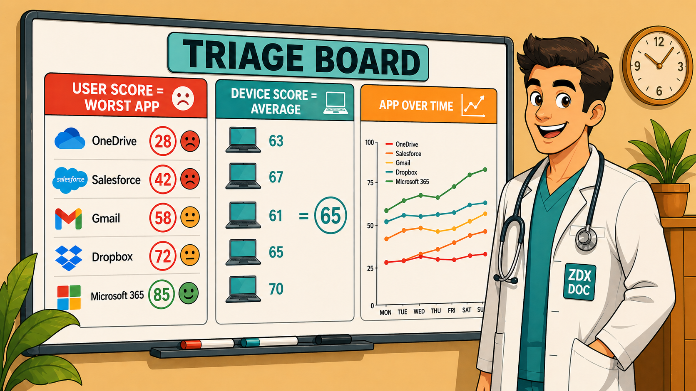
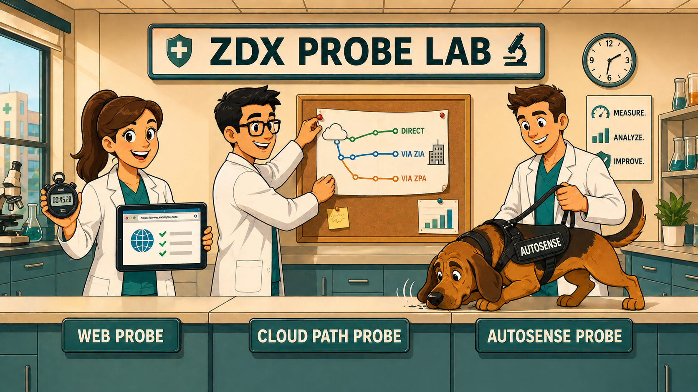
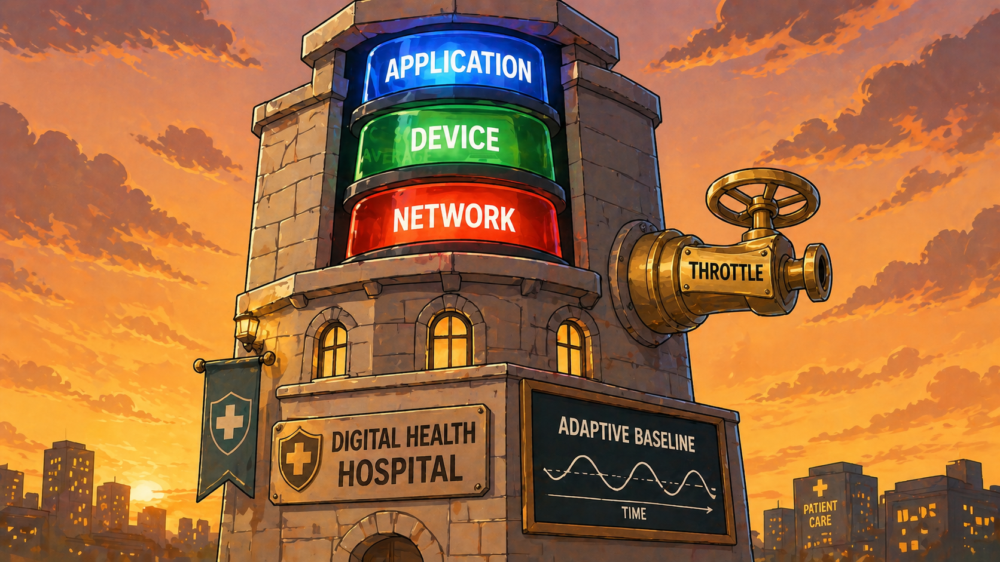
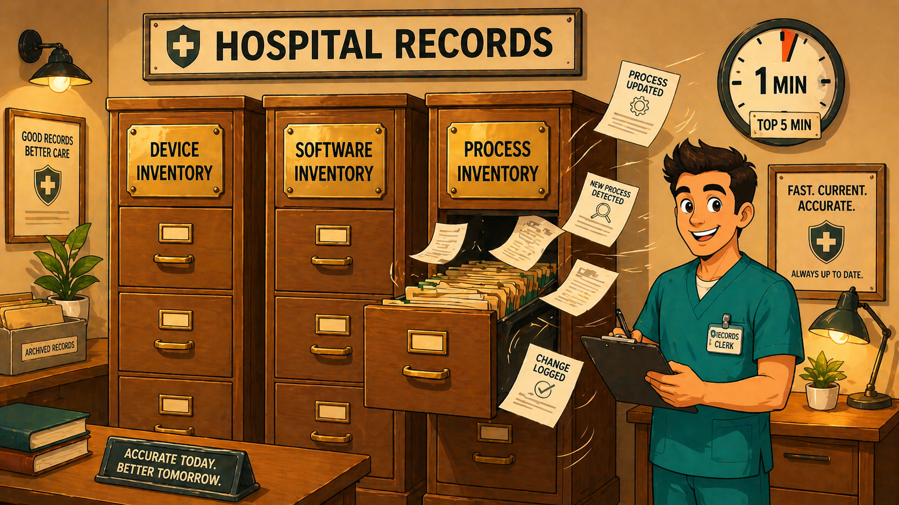
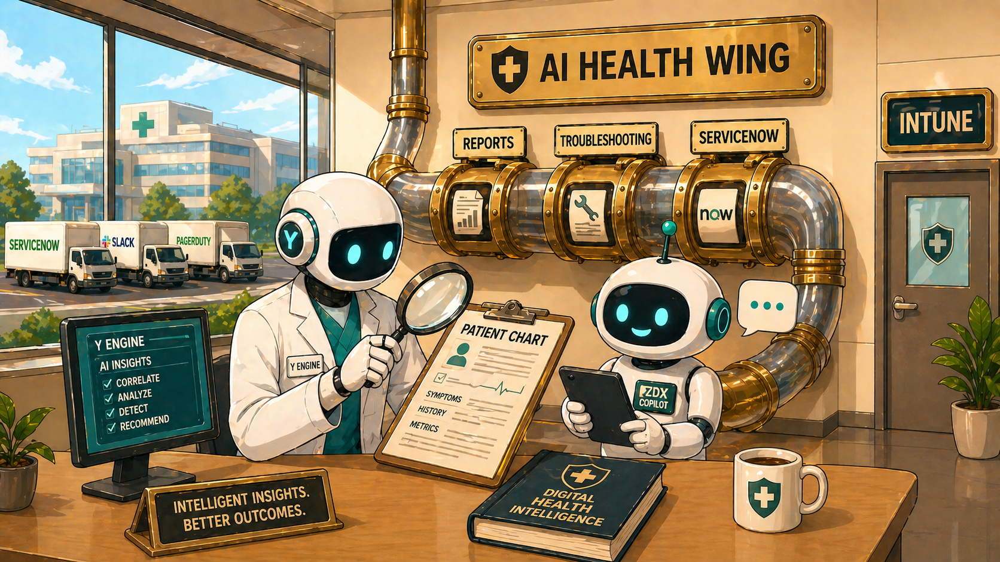

The ZDX Hospital A memory palace for Zscaler Digital Experience
ZDXBlueprint: 8%
Why a hospital?
ZDX is a digital health monitor for users, devices, applications and the network paths
between them. It triages problems, runs diagnostics, raises alarms, and keeps charts on every patient.
A hospital is the natural metaphor — and a much easier place to remember than a list of bullet points.
Walk through the building once, slowly. Each room anchors a ZDX concept. After two or three walk-throughs,
the concepts will recall themselves in order whenever you need them on the exam.
Using the image slots:
Each room has a placeholder and a collapsible generation prompt below it. Click the placeholder to upload an image. Click the prompt header to expand it and COPY the prompt for your image generator.
Modern flat cartoon illustration, clean cel-shaded style. A friendly cartoon receptionist in a hospital scrub top stands behind a tall reception desk, smiling, holding up two oversized thermometers — one clearly labelled "PFT" and the other clearly labelled "AVAILABILITY". Behind her on the wall: a large calendar with the last 7 days circled in red, and a sign reading "ZDX SCORE DESK". On the desk in front of her sits a chunky toggle switch labelled "SMOOTH". Warm golden lighting, simple shapes, bold outlines, limited palette of cream/gold/orange with teal accents. 16:9.
Imagine
A receptionist behind a tall counter is holding up two thermometers: one labelled PFT
(Page Fetch Time) and one labelled Availability. Behind her, a wall calendar shows the
last seven days circled in red — that's the rolling window she compares every new reading against.
A small toggle on the desk says "Smooth"; flicking it makes the readings stop jittering.
What this anchors
Two componentsPage Fetch Time + Availability → combined into one ZDX Score.
Baselining, not thresholdsApp performance changes constantly; static thresholds are unworkable. Baselines learn.
Rolling 7-day windowRecalculated daily, for both predefined and custom apps.
Smooth ZDX ScoreOptional toggle: ~30-min moving average to dampen point-in-time spikes.
Anchor phrase: "Two thermometers, seven-day calendar, smoothing toggle."
2
📋Triage Board — The Score Hierarchy who's the sickest?
APP TILE · USER SCORE · DEVICE SCORES

▶🎨 Image Prompt
Modern flat cartoon illustration, clean cel-shaded style. A cartoon doctor in a white coat with a stethoscope stands beside a giant whiteboard labelled at the top "TRIAGE BOARD". The board has three labelled columns: "USER SCORE = WORST APP" (with a frowning face icon next to a red circled number), "DEVICE SCORE = AVERAGE" (with multiple laptop icons and an equals sign), and "APP OVER TIME" (with a small line graph). The doctor points at the worst-performing row with a confident expression. Bold outlines, limited palette of cream/gold/orange with red and teal accents, simple background, 16:9.
Imagine
Past reception, a giant whiteboard lists patients. Each user's name is written in red marker
with the score of their worst-performing app — that's the rule. A second column averages all the
devices they own. A third column tracks each application tile over time.
A doctor mutters: "A user is only as well as their sickest app."
What this anchors
Application Tile ScoreAverage score of an app over the selected period (shown on the App Tile).
User ScoreThe worst-performing app's score (not an average) — pessimistic on purpose.
Device ScoreAverage of all device scores tied to a user.
App Score Over TimeAverage of all users at each point in time — the dashboard line graph.
Trap to avoid: User Score is the worst app, but Device Score is an average. Different math, different meaning.
3
🔬The Lab — Probes how the readings are taken
WEB · CLOUD PATH · AUTOSENSE · THE THREE PATHS

▶🎨 Image Prompt
Modern flat cartoon illustration, clean cel-shaded style. Three cartoon lab technicians in white coats stand side by side at a long lab bench in a hospital lab. Above them a sign reads "ZDX PROBE LAB". The first technician holds a stopwatch and a tablet showing a browser window — a label below her reads "WEB PROBE". The second pins a paper map to a corkboard showing three coloured routes labelled "DIRECT", "VIA ZIA", "VIA ZPA" — labelled "CLOUD PATH PROBE". The third holds a leashed cartoon bloodhound mid-sniff — labelled "AUTOSENSE PROBE". Bold outlines, limited cream/gold/orange palette with teal accents, simple lab background, 16:9.
Imagine
Three lab technicians work side by side. The first holds a stopwatch and a browser — she's the
Web Probe, fetching pages without caching to time DNS, fetch and server response.
The second holds a map with three coloured routes — she's the Cloud Path Probe,
running traceroute to count hops, latency and loss along Direct, via ZIA, or via ZPA.
The third has a bloodhound on a leash sniffing the air — she's the Autosense Cloud Path
Probe, dynamically detecting destination IP/port for UCaaS calls that move around.
What this anchors
Web ProbePage Fetch Time, DNS Time, Server Response Time, Availability. No caching.
Modern flat cartoon illustration, clean cel-shaded style. A cartoon radiology technician in scrubs operates a large MRI-style scanner labelled "DEEP TRACING". The control panel has a big timer dial showing a range "5–60 MIN". Mounted on the wall behind: an X-ray light board displaying film labelled "PCAP". To one side, a small treadmill labelled "BANDWIDTH TEST" with up/down arrows. A printer is producing a document labelled "PDF EXPORT". Bold outlines, simple shapes, limited cream/gold/orange palette with teal accents, soft clinical setting, 16:9.
Imagine
A radiology room. The technician sets the timer between 5 and 60 minutes, picks one user, one device,
one app, and presses start. The machine prints out process-level data every minute,
attaches a packet capture like an X-ray film, and runs a bandwidth test for the
patient's upload and download lungs. Results export to PDF for the L2/L3 specialists.
What this anchors
TargetingOne user + one device + one application — Deep Tracing is laser-focused.
Duration5 to 60 minutes per session.
What it capturesProcess-level info, PCAP, bandwidth test results.
ExportPDF output for documentation and ticket attachment.
5
🚨Alarm Tower — Alerts three colours of siren
APPLICATION · DEVICE · NETWORK

▶🎨 Image Prompt
Modern flat cartoon illustration, clean cel-shaded style. A tall stone hospital tower at dusk with three large stacked sirens visible at the top. Each siren is clearly labelled and colour-coded: top siren BLUE labelled "APPLICATION", middle siren GREEN labelled "DEVICE", bottom siren RED labelled "NETWORK". A big brass throttle valve protrudes from the side of the tower, labelled "THROTTLE". Mounted on the wall, a chalkboard shows a wavy "ADAPTIVE BASELINE" graph. Bold outlines, simple shapes, dramatic warm sunset sky, cream/gold/orange palette with the three sirens as the only saturated colour spots, 16:9.
Imagine
A tower with three sirens stacked: blue
(Application), green (Device), and
red (Network). Each siren has its own filters —
location, user group, individual device. A throttle valve below stops the alarms from screaming all night
(alert fatigue). On the wall: a chart of adaptive baselines that learn what "normal" looks like.
Metric examples by event type
Application (blue)DNS Time · Page Fetch Time · Server Response Time · Web Request Availability · ZDX Score Drops.
Device (green)Bandwidth · Battery Level · CPU · Disk · Memory · Wi-Fi Signal.
Memory hook: Notice that ZDX Score Drops shows up under both Application and Network — it's a cross-cutting trigger.
6
📦Records Room — Inventory the filing cabinets
DEVICE · SOFTWARE · PROCESS

▶🎨 Image Prompt
Modern flat cartoon illustration, clean cel-shaded style. A hospital records room. Three tall wooden filing cabinets stand in a row, each with a large brass plate label clearly visible: "DEVICE INVENTORY", "SOFTWARE INVENTORY", "PROCESS INVENTORY". The "PROCESS" cabinet's drawer is open mid-motion with paper files flying out (showing it updates constantly). A small clock on the wall reads "1 MIN" with a smaller note "TOP 5 MIN". A friendly cartoon hospital records clerk in scrubs holds a clipboard. Bold outlines, simple shapes, warm cream/gold/orange palette with soft lamp light, 16:9.
Imagine
Three filing cabinets along the wall. The first holds Device records (who owns what hardware).
The second holds Software records — current and historical versions, like medical history.
The third is labelled Process and the drawer is constantly opening — top processes refresh
every five minutes, with metrics updated every minute.
What this anchors
Device InventoryReal-time visibility into devices and their users.
Software InventoryCurrent + historical software versions and patches.
Process InventoryMetrics every 1 min · top processes shown every 5 min.
Common prerequisitesMin ZCC + ZDX Module versions · subscription tier · data collection enabled · permissions.
7
🔑Security Office — RBAC the keycard maker
FULL · VIEW ONLY · CUSTOM · NONE
▶🎨 Image Prompt
Modern flat cartoon illustration, clean cel-shaded style. A hospital security office. A friendly cartoon security guard in uniform stands behind a desk operating a keycard printer. Four freshly-printed keycards are fanned out on the desk in front of him, each with a clear large label: GREEN card reads "FULL", BLUE card reads "VIEW ONLY", PURPLE card reads "CUSTOM", RED card reads "NONE". Behind him, a row of doors is visible with small signs above each: "DASHBOARD", "UCAAS", "CONFIG", "USER MGMT", "DEEP TRACING", "ALERTS", "WEBHOOKS". Bold outlines, simple shapes, warm cream/gold/orange palette, 16:9.
Imagine
A security guard prints keycards in four colours: Full (read+write),
View Only (look but don't touch), Custom (tailored), and None
(door won't open). Each card opens a different combination of doors: Dashboard, UCaaS Monitoring,
Configuration, User Management, Deep Tracing, Alerts, Webhooks.
What this anchors
Four access levelsFull · View Only · Custom · None — applied per section.
Sections coveredDashboard · UCaaS · Config · User Mgmt · Deep Tracing · Alerts · Webhooks.
Why it matters: RBAC in ZDX is granular per section, not a single role-wide switch — that's the engineer-level detail.
8
🤖The AI Wing — Y Engine, Copilot, API the smart side of the hospital
Y ENGINE · ZDX COPILOT · API · WEBHOOKS · INTUNE

▶🎨 Image Prompt
Modern flat cartoon illustration, clean cel-shaded style. A bright glass-walled hospital wing. A cartoon AI robot doctor in a white coat labelled "Y ENGINE" stands at a desk reading a patient chart through a magnifying glass. Beside it, a friendly assistant chatbot character with a tablet has a name badge labelled "ZDX COPILOT". On the back wall, a brass pneumatic tube system has three slots clearly labelled "REPORTS", "TROUBLESHOOTING", "SERVICENOW". Through a window outside, three cartoon delivery trucks are parked with signs reading "SERVICENOW", "SLACK", "PAGERDUTY". A side door has a sign labelled "INTUNE". Bold outlines, simple shapes, warm cream/gold/orange palette with subtle teal tech accents, 16:9.
Imagine
A glass-walled wing at the back of the hospital. The Y Engine is an AI doctor doing
automated root-cause analysis on the charts. ZDX Copilot sits at a desk fielding
questions from junior staff. A pneumatic tube system on the wall is the ZDX API
with three slots: Reports, Troubleshooting, and ServiceNow integration. Outside, three
delivery trucks idle for the webhooks: ServiceNow, Slack, PagerDuty. A side door connects to
Microsoft Intune for endpoint analytics — boot times, startup performance, software reliability.